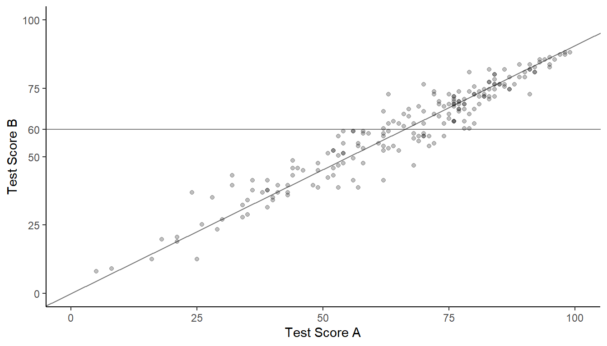

You can also download a PDF copy of this document.
Conservation researchers conducted a survey to estimate the density and abundance of a species of “larkspur” (a flowering plant of the genus Delphinium) in an irregularly-shaped region. To survey the larkspur they divided the region into 150 one-meter wide transects from north to south. But because of the irregular shape of the region the transects were not all of equal area. The total area of the region (and hence all of the transects) was 5897 square meters. The researchers selected a sample of 20 transects using simple random sampling. The mean area of these transects was 28.4 square meters. The mean number of larkspur in these transects was 21.45 plants.
The density of the larkspur in the region is the ratio of the total number of larkspur to the total area of the region. Confirm that an estimate of the larkspur density is approximately 0.76 larkspur per square meter.
Confirm that the estimate of the total number of larkspur in the region using a ratio estimator with transect area as an auxiliary variable is approximately 4454 larkspur.
The figure below shows a plot of the data from the sample.1 The line has an intercept of zero and a slope equal to the estimated density found earlier.
The sum of the squared lengths of the line segments is \(\sum_{i \in \mathcal{S}}(y_i - rx_i)^2\) = 7908.88. Use this to confirm that the bound on the error of estimation for the estimator of the density of larkspur is 0.22 larkspur per square meter, and that the bound on the error of estimation of the ratio estimator for the total number of larkspur is 1274 larkspur.
Recall a problem from an earlier homework on stratified random sampling where researchers were interested in estimating the average score for the 1000 students at a school. Student test scores on another test that all students had already taken was used as an auxiliary variable to stratify the students into high, medium, and low achievement levels. Here we will consider an alternative approach where this auxiliary variable is used in estimation but not in the design. Suppose we want to estimate the mean test score on test A for all the students at the school based on a simple random sample of 200 students. All the students at the school have already taken test B. The mean score on that test was 66.6. For the sample of 200 students the mean test score on test A was 60, and the mean test score on test B was 66.1. The figure below shows a scatter plot of the scores on the two tests for the sample of 200 students.

The horizontal line has an intercept of 60 and a slope of zero, while the other line has an intercept of zero and a slope of 60/66.1. The sum of the squared vertical distances of the points to the line with the positive slope is \(\sum_{i \in \mathcal{S}}(y_i - rx_i)^2\) = 43393.2. The sum of the squared vertical distances of the points to the flat line is \(\sum_{i \in \mathcal{S}}(y_i - \bar{y})^2\) = 61630.7.
Use this information to answer the following questions.
Confirm that the ratio estimator for the mean score on test A for all students at the school, using the test score on test B as an auxiliary variable, gives an estimate of approximately 60.5, and that the bound on the error of estimation for this estimator is approximately 1.9.
Another estimator of the mean score on test A is the sample mean, which gives an estimate of 60. Confirm that the bound on the error of estimation for this estimator is approximately 2.2.
Recall the example from class where a crude approximation of leaf area was used as an auxiliary variable for estimating the mean area of a population of 744 leaves from a shining gum tree. While the crude area approximation might be an effective auxiliary variable, it is still somewhat labor intensive. Perhaps an even less intensive approach would be to use leaf weight as an auxiliary variable. Weight can be very quickly measured, and it is only necessary to individually weigh the 20 leaves in the sample because the total weight of all 744 leaves can be measured at once by putting them together on a scale. The mean area of the leaves in the sample is 52.12 square centimeters, and the mean weight of the leaves in the sample is 1.06 grams. Confirm then that if the weight of all 744 leaves together is 745.2 grams then the ratio estimator of the mean area of the 744 leaves, using now leaf weight as the auxiliary variable, gives an estimate of approximately 49.25 square centimeters. (Hint: To get \(\mu_x\) from \(\tau_x\) remember than \(\mu_x = \tau_x/N\).)
| Village | Births | People |
|---|---|---|
| 1 | 6 | 58 |
| 2 | 7 | 158 |
| 3 | 5 | 82 |
| 4 | 9 | 177 |
| 5 | 6 | 188 |
| 6 | 1 | 9 |
| 7 | 4 | 106 |
| 8 | 4 | 178 |
| 9 | 4 | 110 |
| 10 | 8 | 91 |
Now consider a different problem. Suppose we wanted to estimate the total population of the 100 villages. The number of people in a village is likely approximately proportional to the number of births, and the (approximate) number of births in each of the 100 villages may be significantly more easy to obtain than the population as (most) births in the past year may be known to those at the village while the village population may not. Assume that the total number of known births for the 100 villages is 542 births, and that for the sample of 10 villages obtained using simple random sampling, the mean number of known births in the past year was 5.4 and the mean number of people was 115.7. Use this information to confirm that using a ratio estimator with the number of births as the auxiliary variable, the estimate of the total population2 of the 100 villages is approximately 11613 people.3
| plot | rapid | intense |
|---|---|---|
| 1 | 12 | |
| 2 | 22 | 29 |
| 3 | 24 | |
| 4 | 30 | |
| 5 | 19 | |
| 6 | 33 | |
| 7 | 15 | |
| 8 | 34 | |
| 9 | 10 | |
| 10 | 18 | 23 |
| 11 | 15 | |
| 12 | 33 | |
| \(\vdots\) | \(\vdots\) | \(\vdots\) |
| 201 | 27 |
The first phase sample of 201 plots was selected using simple random sampling, and the rapid count method was applied to these plots. The mean number of nests per plot in this sample of 201 plots was 20.8 nests. The second phase sample of 12 plots was then obtained by applying a simple random sampling design to the 201 plots selected for the first sample. In this second sample the mean number of nests per plot based on the rapid method was 16.3 nests, and the mean number of nests per plot based on the intense method was 20.6 nests. Confirm that a ratio estimator of the total number of nests in the 2130 plots, using the rapid count of nests as an auxiliary variable, gives an estimate of approximately 55992 nests.
Researchers are planning another survey like the one described in the previous problem, but in a different location. They want to determine the optimum allocation for the first and second phase sample sizes. The cost of observing the auxiliary variable (i.e., the rapid count) is 1 minute per plot, and the cost of observing the target variable (i.e., the intense count) is 10 minutes per plot. Based on experience, the researchers estimated the two variance parameters as \(\sigma^2\) = 10 and \(\sigma_r^2\) = 5. For a total fixed cost for the survey of 1000 minutes, confirm that the optimum allocation is approximately 240 plots for the first phase, and approximately 76 plots for the second phase.
Consider again the leaf area problem where 20 leaves were selected using simple random sampling from a population of 744 leaves. The mean leaf area in the sample was 52.12 square centimeters, and the mean leaf weight in the sample was 1.06 grams. Now consider using regression estimator for the mean and total leaf area of all 744 leaves. The slope of the regression line for predicting leaf area from leaf weight is 47.78. Confirm that using the appropriate regression estimator with leaf weight as the auxiliary variable, the estimate of the mean leaf area is approximately 49.33, and the estimate of the total leaf area is approximately 36701.72. (Refer to the earlier leaf area problem for \(\mu_x\) and \(\tau_x\).)
| \(x_i\) | \(y_i\) | Expansion | Ratio | Regression |
|---|---|---|---|---|
| 2 | 10 | 4 | 6.25 | |
| 3 | 10 | 6 | 7.5 | |
| 3 | 10 | 6 | 7.5 | |
| 3 | 4 | |||
| 4 | 10 | 8 | 8.75 | |
| 4 | 14 | |||
| 5 | 10 | 10 | 10 | |
| 6 | 8 | |||
| 6 | 9 | |||
| 6 | 15 |
The table also shows the predicted values (i.e., \(\hat{y}_i\)) for an estimator of the form \[ \hat\tau_y = \sum_{i \in \mathcal{S}} y_i + \sum_{i \in \mathcal{S}'} \hat{y}_i. \] The predicted values correspond to three different estimators: the “expansion estimator” \(\hat\tau_y = N\bar{y}\), the ratio estimator \(\hat\tau_y = \tau_x\bar{y}/\bar{x}\), and the regression estimator \(\hat\tau_y = N\bar{y} + b(\hat\tau_x - N\bar{x})\). We discussed in class three different ways of computing predicted values leads to these three estimators. Confirm that the predicted values are correct by computing them yourself. For your calculations use the fact that the means of the target and auxiliary variable for the sample of 5 elements are \(\bar{y}\) = 10 and \(\bar{x}\) = 5, respectively, and the value of \(b\) that would be computed for a regression estimator is \(b\) = 1.25. The predicted values are given in the following table. (Hint: The parameter \(\tau_x\) isn’t given, but you can compute it! Remember that \(\tau_x = \sum_{i=1}^N x_i\), so you can compute it by adding all \(N\) = 10 values of \(x_i\) in the population.)
| \(x_i\) | \(y_i\) | Expansion | Ratio | Regression |
|---|---|---|---|---|
| 3 | 4 | 2 | 1.68 | 1.82 |
| 4 | 14 | 2 | 1.68 | 1.76 |
| 6 | 8 | 2 | 1.68 | 1.64 |
| 6 | 9 | 2 | 1.68 | 1.64 |
| 6 | 15 | 2 | 1.68 | 1.64 |
Confirm the survey weights shown above by computing them yourself.
Recall that the sample is calibrated with certain weights if the estimate of \(\tau_x\), computed as \(\hat\tau_x = \sum_{i \in \mathcal{S}} w_ix_i\), equals \(\tau_x\). We know that \(\tau_x\) = 42. Check each of the three sets of weights above. Determine which sets of weights calibrate the sample with respect to the auxiliary variable and which do not. You should find that only the weights corresponding to the ratio and regression estimators calibrate the sample with respect to the auxiliary variable (the sample may be only approximately calibrated due to rounding).
Two observations are identical so only 19 distinct points can be seen.↩︎
Note that we are using the term population in two ways here: to refer to the total number of elements (villages), which has a size of 100, and to refer to the total number of people in all 100 villages, which is another “population size” that we are trying to estimate.↩︎
One of the earliest known uses of a ratio estimator was to estimate the population of France where registered births was used as an auxiliary variable. Data on births was more easy to come by since France was largely Catholic and there were reliable records of infant baptisms.↩︎